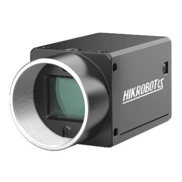
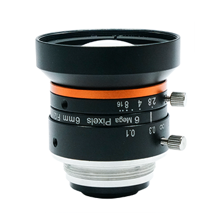
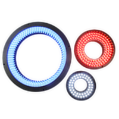

1. 检测条件 改动后自动重算
计算为几何光学估算（薄透镜近似），采购前请用官方规格书与实拍复核。
2. 选型结果
点击「生成选型方案」
输入检测条件，自动给出相机 + 镜头（含远心）+ 光源的具体型号与校核数据。所有型号、分辨率、像元、靶面、帧率、接口、焦距、倍率、功率均来自海康机器人官网产品页，可在下方数据表中直接核对。
计算为几何光学估算（薄透镜近似），采购前请用官方规格书与实拍复核。
暗场照明：光以低角度掠射，划痕把光散射进镜头，平整面保持黑

面阵相机（官方产品图）

FA 镜头 MVL 系列（官方产品图）

环形光源 MV-LRDS 系列（官方产品图）